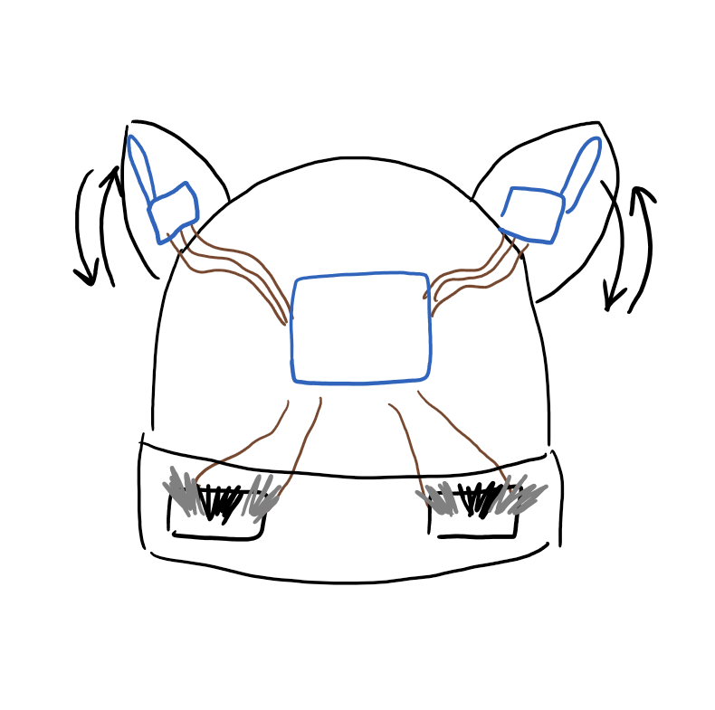
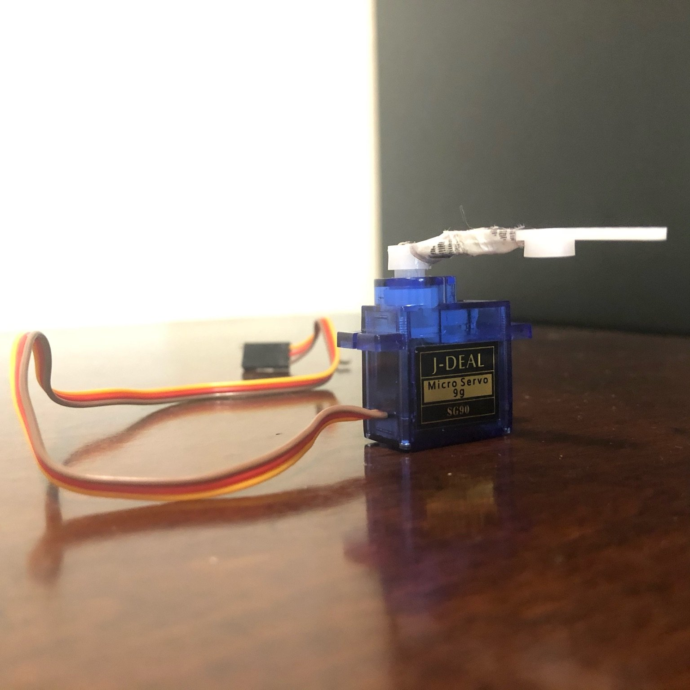
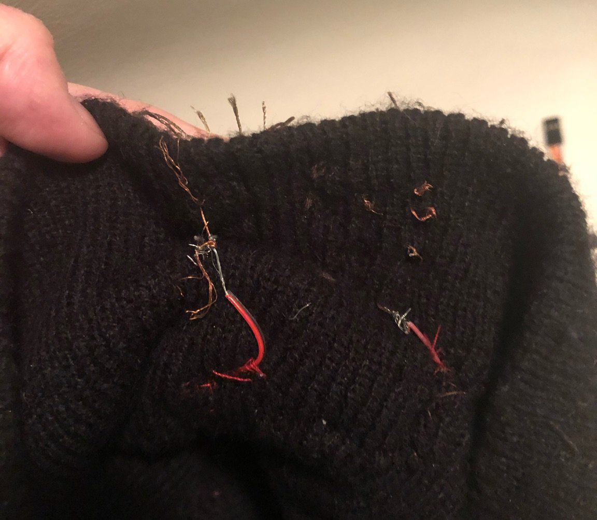
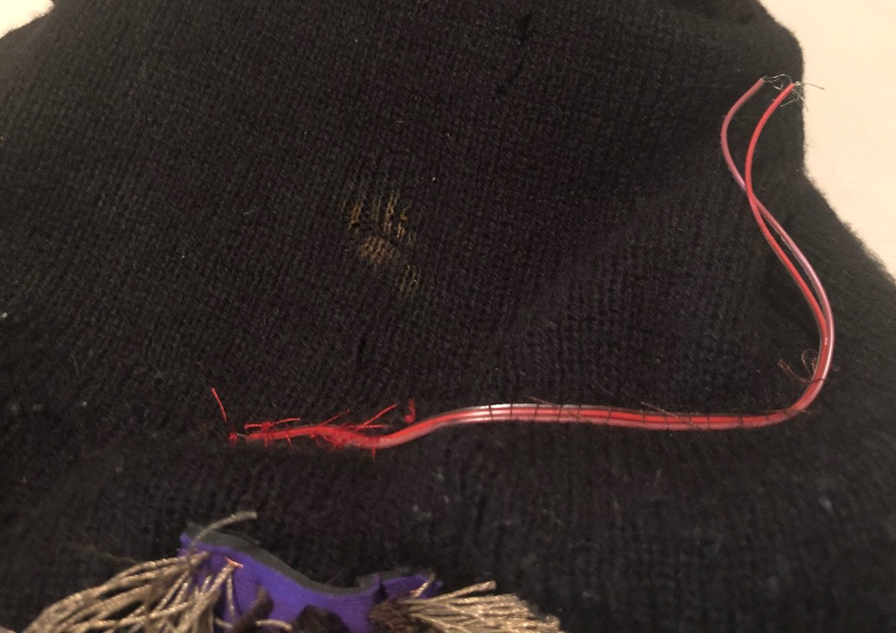
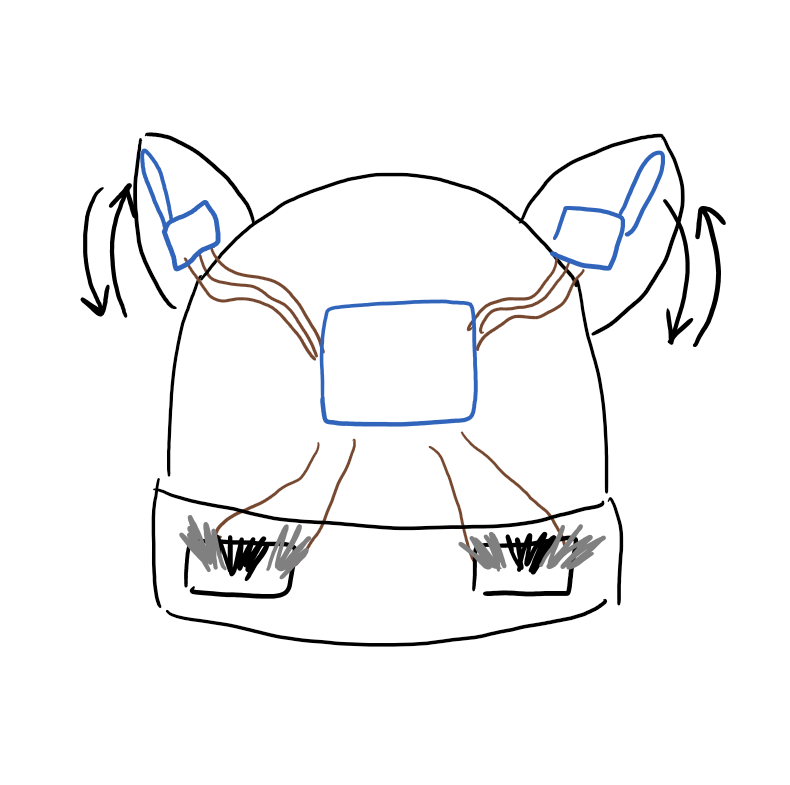
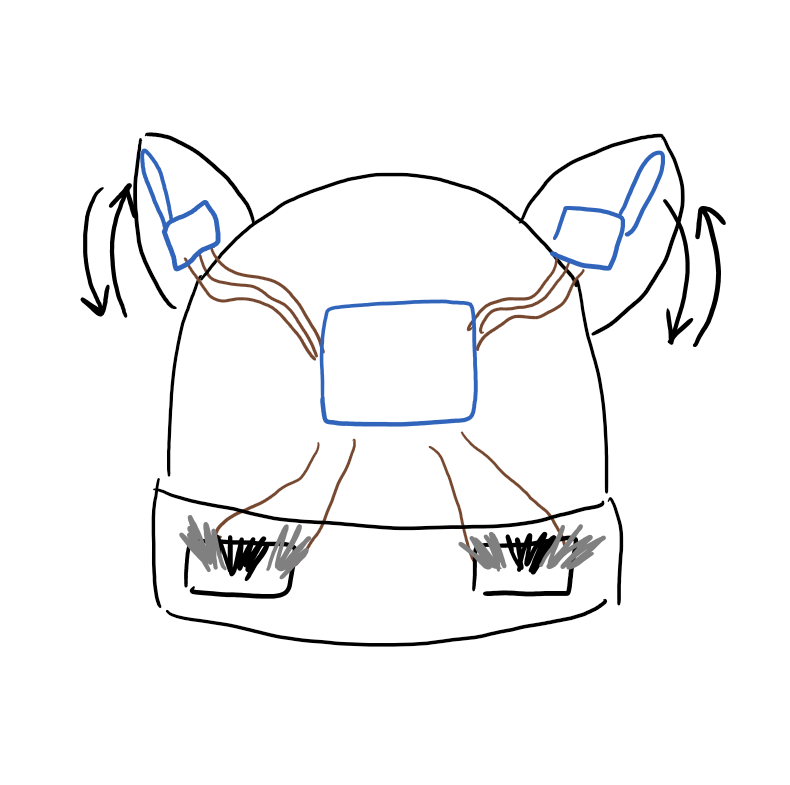

It's only been two years since I adopted a cat of my very own. I grew up with family pets, but this time I was the cat parent - It was different!
Even though I've had my cat Midge for a few years now it still feels brand new, and when you have a pet that's yours and yours alone, the attachment is unique.
That's why I made this project - It sucks that I can't have my cat by my side all the time, so why not make something that kinda feels like it?

I decided to modify a hat I have that looks like the cat, Jiji, from Kiki's Delivery Service. I hand-made two stroke sensors
to recieve input as they're the most fitting switch for this type of project - a unique way to create a switch that's perfectly analogous to petting the fur of an animal,
without being any more complicated than a basic button. The input from these sensors results in output from two mini servo motors, one in each ear, to perfectly (well, maybe not perfectly)
recreate the wiggle of the Necomimi ears. The servos are programmed to go from 0 to 180 degrees, causing the ears to go back and forth each time the sensors are triggered.
Technical Implementation
Stroke Sensors
I followed the Kobakant guide to create my stroke sensors. For each sensor, I took a small square of neoprene (non-conductive) and sewed
a strip of conductive fabric onto each side, which I will hereon refer to as the "positive" and "negative" ends. (It doesn't matter which end's which; one just has to go to GPIO and the other to GND.)
I used copper thread to sew the conductive strip to the neoprene - it's important that the conductive and non-conductive stay apart in this type of switch. This also applies for when you
finish creating the sensor and attach it to the hat - Sew the neoprene to the hat with normal thread, but make sure that the copper thread from the conductive strips extends long enough that it can weave
into the hat and be attached to wires later on.
Using a technique similar to a hooked rug, I first sewed a thick row of normal thread through the neoprene in the center of the sensor. On the "positive" and "negative" ends, I sewed a row of
conductive thread through the neoprene so that all the threads in the row would be connected to each other through the strip of conductive fabric. The key here is that the conductive threads should be slightly
longer than the normal thread; they should be long enough that when stroked, the conductive threads attached to the "positive" and "negative" ends will touch.
From Kobakant:
The simplest example of the stroke sensor is to have a row of conductive threads that are connected to one another on the reverse side, by stitching them through a strip of conductive fabric. When stroked flat, these threads are long enough to make contact with another piece of conductive fabric mounted on the top of the sensor. Closing the switch.
Mini Servos
This part is pretty simple. Our class kit only had one servo motor, so I borrowed another from the professor to have two. These servos are the perfect size to be small enough to fit inside the ears of the hat.

I screwed on the servo attachment that only points in one direction, and actually taped a second attachment onto it to make the extension longer. I did this for both motors. I did this so the extension would better fill
the space inside of the ear and, ideally, go along its whole length so that the ear will move cleanly with each swipe.
I programmed both servos to go from 0 to 180 degrees. This causes the extension to go back and forth, in a windshield wiper motion. In the cat's ears, I had to position the servos carefully so the ears would wiggle how I wanted them to.
I positioned them to be side-facing so that the extensions move forward and backward instead of side-to-side.
Wiring
After attaching the stroke sensors to my hat, I was left with ends of conductive thread which peeked out of the other side of the hat's front band. I decided to sew wire into the band of the hat so that connection to the sensors could be brought inside
the hat and stay hidden, rather than having alligator clips clearly visible and connected to the thread ends like I had during testing.
Originally, I wanted to solder all my connections to a perf board so that I could place that inside of the hat, and have
all my connections very clean and robust. However, after classes converted to online I could no longer reach campus to solder. So, I still kept these wires, but just connected the ends inside of the hat to the Arduino using alligator clips. It wasn't perfect,
but still cleaner and more hidden than how I had it before.
Wiring

This is what it looks like directly behind the front band of the hat (one sensor). You can see the copper thread, which is coming through from the conductive ends of the stroke sensor. The red and red-brown wires are coming from the inside of the hat,
and as you can see, the ends of these wires are connected to the conductive thread by being wrapped, twisted, and/or tied together. The red wire connects ONLY to the "positive" end of the sensor and the red-brown wire connects ONLY to the "negative" end.
Wiring

This is a view of the wire when the hat is inside-out. The part of the wire sewn with red thread is the point where the wire splits in two (red and red-brown) and pokes through to the outside of the hat. I sewed the rest of the wire along the inside of the hat
so cannot be seen when looking at the hat straight-on. I split the wires apart once again at the end of the segment, so that when I connect alligator clips to them respectively, they remain far away from each other and I don't have to worry about a faulty circuit.
Circuit
The circuit is actually extremely simple. Each servo motor has three wires, GND, Vcc, and PWM. They are both connected to GND and 5v through Arduino. The PWM of the left servo goes to digital pin 5, and the right servo goes to digital pin 10.
The stroke sensors both connect to GND through their "negative" ends. The "positive" end of the left sensor connects to A1 on Arduino and the "positive" end of the right sensor goes to A2.
Schematic
~CODE~
You'll see that I have some code commented out at the end. Originally, I wanted to code the hat so that the left sensor controls the left ear and the right sensor controls the right ear, and if they're both stroked, both ears would wiggle. However, this didn't work. Or at least it got too complicated.
With the way that servos work, I wouldn't be able to trigger the process of one servo while another servo is still processing. By that I mean when I originally programmed the hat like this, the ears would never go off at the same time. If both sensors were stroked, one ear would just go after the other.
I was kinda sad about this because I wanted my hat's code and functionality to be more complex. But in the end, to get the result I wanted I just made it really simple and had either sensor trigger both ears.
So, to clarify how exactly this works: When one of the stroke sensors is stroked, it closes a switch which triggers both servo motors to go from 0-180 degrees and back, once. If the sensor continues to be triggered, the ears will continue to wiggle. And that's it... Really!

 
